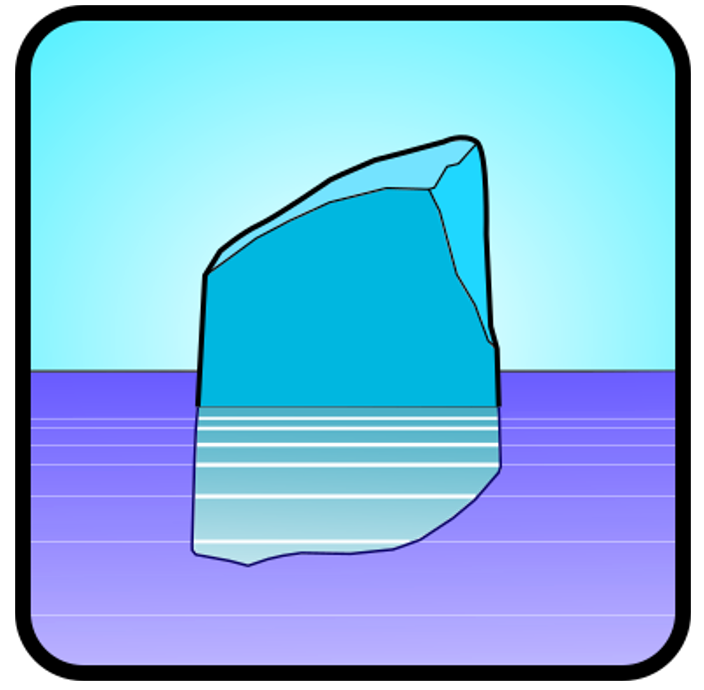

BEMRosetta
Hydrodynamic coefficients viewer and converter for Boundary Element Method solver formats.
|

|
|
Link to main Github page.
Citations
Processing of potentials and hydrodynamic coefficients at panel level, and remapping according to a defined device structure.
Dynamic Modelling of HiveWind Floating Wind Substructure in OpenFAST. R. Bergua, I. Zabala, A. Gomez, L. Wang, O. Pena, J. Jonkman, J. Peña (2024). NAWEA/WindTech 2024, New Brunswick. USA..
A method for translating the hydrodynamic coefficients to another reference frame. A convergence acceleration method applied to the hydrodynamic coefficients.
Post-processing techniques to improve the results of hydrodynamic boundary element method solvers. I. Zabala, J.C.C. Henriques, T.E. Kelly, P.P. Ricci, J.M. Blanco. Ocean Engineering 295, 116913.
Post-processing for irregular frequency removal.
A post-processing technique for removing ‘irregular frequencies’ and other issues in the results from BEM solvers. T. Kelly, I. Zabala, Y. Peña-Sanchez, J. Ringwood, J. Henriques, J.M. Blanco (2022). International Journal of Marine Energy 5 (1), 123-131
Review of the main features.
BEMRosetta: An open-source hydrodynamic coefficients converter and viewer integrated with Nemoh and FOAMM. I. Zabala, Y. Peña-Sanchez, T.E. Kelly, J.C.C. Henriques, M. Peñalba, N. Faedo, J. Ringwood, J.M. Blanco (2021). 14th European Wave and Tidal Energy Conference, 5-9th Sept 2021, Plymouth, UK.
Short Videos
If you are missing any video, please request it.
Acknowledgments
J. C. Portillo, J. C. C. Henriques, J. M. Blanco, M. J. Sanchez-Lara, M. Alonso, A. Aristondo, P. P. Ricci, A. Otter, J. Galvan, K. Ruehl, S. Husain, S. Zheng, L. Garcia.
Some file parsing strategies taken from the BEMIO project.
Based on U++ multiplatform library.
We would like to thank the developers of the open source BEM solvers:
École Centrale de Nantes, CNRS, and the NEMOH developers.
Matthieu Ancellin, the developer of Capytaine.
Yingyi Liu, the developer of HAMS.
License
Copyright © 2019-2026 Iñaki Zabala, Thomas Kelly, Markel Peñalba, Yerai Peña-Sanchez.
BEMRosetta is free software: you can redistribute it and/or modify it under the terms of the GNU General Public License as published by the Free Software Foundation, either version 3 of the License, or (at your option) any later version.
BEMRosetta is distributed in the hope that it will be useful, but WITHOUT ANY WARRANTY; without even the implied warranty of MERCHANTABILITY or FITNESS FOR A PARTICULAR PURPOSE. See the GNU General Public License for details.
You should have received a copy of the GNU General Public License along with BEMRosetta. If not, see http://www.gnu.org/licenses/.
Help (work in process)
GUI
API
|